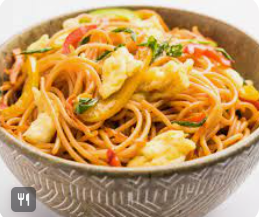

<h3>image dekhamu ajke</h3>
<p>I am super serious</p>
<strong></strong>
self closing tag: 
void tag:
Image: img 
<br>
source: src akta image j nibo atar source ta ki ta bole dite hobe ,
akhane source er src use korte hobe r src ta holo akta attribute 

<h3>Image from local folder</h3>

<br>

<br>

<h3>Image from internet</h3>
